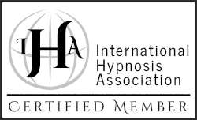

Une expertise approfondie, constamment mise à jour, pour vous offrir un accompagnement de la plus haute qualité.
Julie Bergeron est certifiée maître-praticienne en hypnose transformatrice par l'IFHEC — Institut de Formation en Hypnose et en Coaching, l'un des instituts de formation les plus reconnus au Québec dans le domaine de l'hypnothérapie.
La formation de maître-praticien couvre l'ensemble des approches hypnotiques modernes : hypnose classique, ericksonienne, nouvelle, humaniste et conversationnelle, ainsi que les techniques de PNL (Programmation Neuro-Linguistique).
Chaque formation représente des heures d'études, de pratique et de supervision clinique.
Aucune association d'hypnothérapeute n'existe présentement au Québec. Cependant, le programme professionnel que j'ai suivi est reconnu et accrédité par l'International Hypnosis Association (IHA), dont le siège social est situé aux États-Unis.
Celle-ci a répondu à tous les critères et exigences de l'association concernant le respect rigoureux des normes de déontologie et de professionnalisme en lien avec l'hypnose, en plus de partager un niveau considérable de connaissance et de compétence dans le domaine afin de promouvoir une pratique honorable de l'hypnothérapie.
Ce qui permet de distinguer ma formation de d'autres centres de formation en hypnose.

Je m'engage à maintenir mes compétences à jour en suivant régulièrement de nouvelles formations et en participant à des supervisions professionnelles.
Mon travail s'effectue dans le respect des codes d'éthique professionnels. La confidentialité, le consentement et le bien-être du client sont mes priorités absolues.
Je travaille en complémentarité avec les professionnels de la santé (médecins, psychologues) et je n'hésite pas à référer lorsque c'est approprié.
Mon expertise est au service de votre transformation. Prenez rendez-vous et découvrons ensemble comment l'hypnose peut vous aider.
Prendre rendez-vous